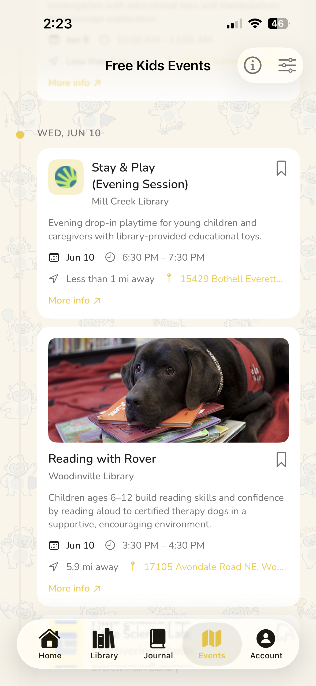
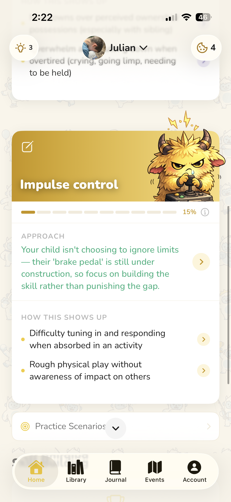
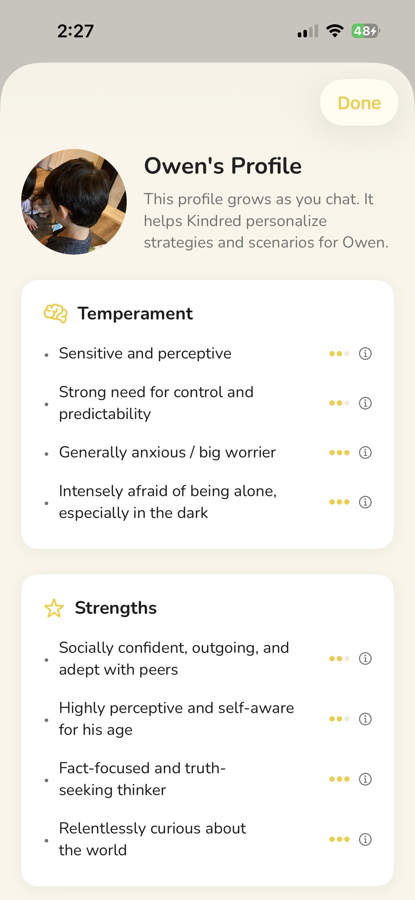
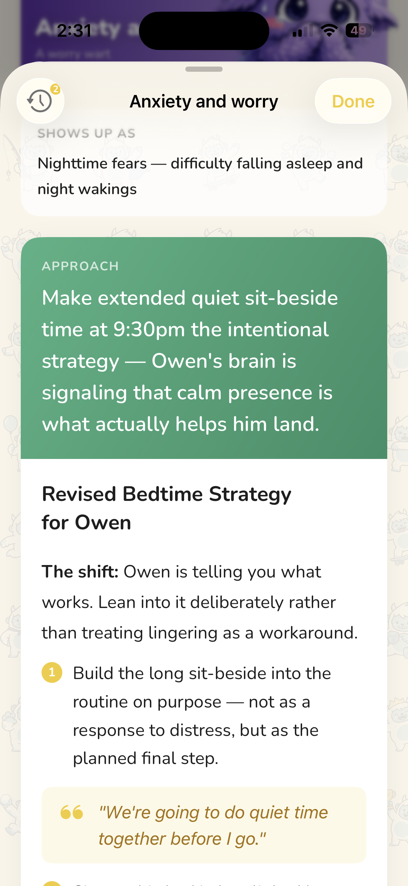
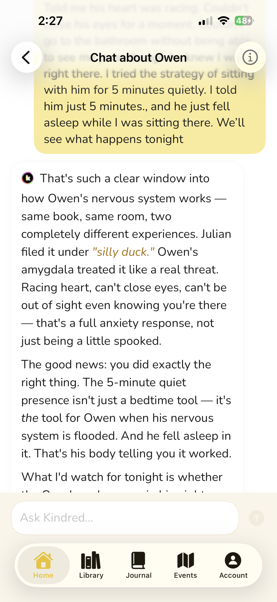
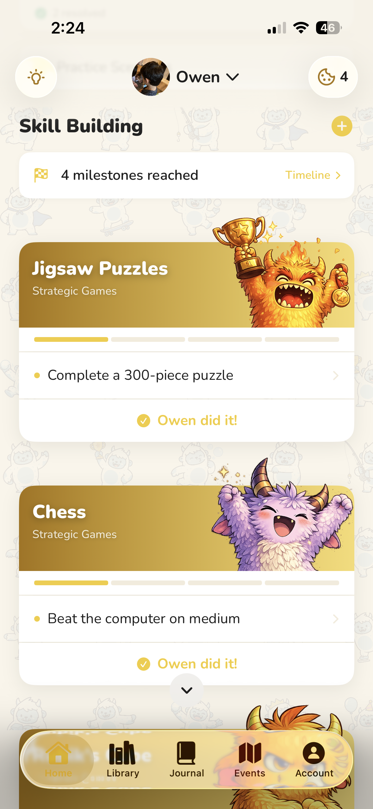
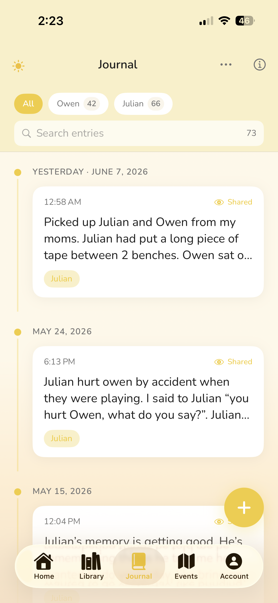
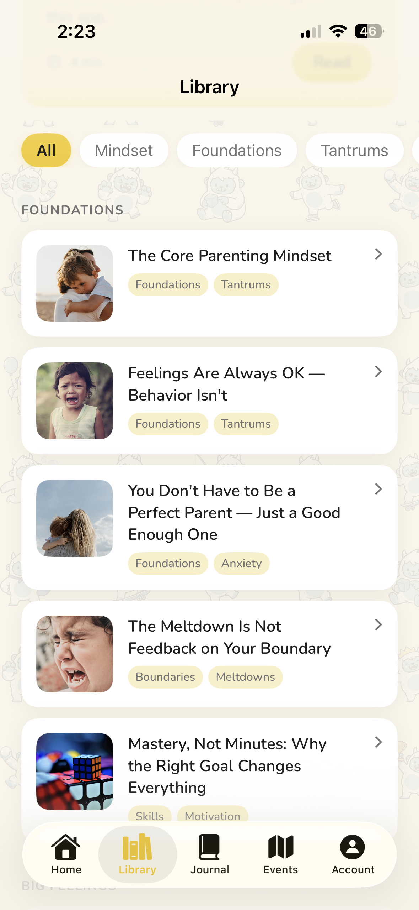

Kindred learns your child's specific patterns, temperament, and triggers — then gives you adaptive strategies that work at every level. Not generic tips. Real guidance for your kid.


There are a million apps for tracking feeds and diapers. But once your kid has opinions, emotions, and meltdowns in the grocery store — you're on your own. Until now.
Tantrums, boundary testing, big emotions they can't name yet. The stage where every day feels like a negotiation.
School anxiety, friendship drama, lying, homework battles. The stage where the problems get more complex — and the stakes feel higher.
Pulling away, emotional walls, peer pressure, screens. The stage where they need you most but act like they don't.
Toddlers aren't giving you a hard time — they're having a hard time. Kindred helps you decode the meltdowns, set boundaries without shame, and stay calm when they can't.
School pressure, friendship drama, lying, anxiety spirals — this is the stage where parenting books stop helping because every kid's version is different. Kindred adapts to yours.
Teens and preteens need you more than ever — but connection looks completely different now. Kindred helps you stay close without smothering, set limits without losing them, and navigate the hardest years of parenting.
The more you use Kindred, the more it understands — building a picture of your child that shapes every piece of guidance it gives.
Describe what you're seeing — tantrums, anxiety, defiance, sleep struggles. Kindred helps you understand what's really going on underneath the behavior.

Not a wall of tips. Kindred builds adaptive strategies at two levels — macro shifts that change long-term dynamics, and micro scripts for what to say in the next 30 seconds.

Had a hard moment? Not sure how to handle what just happened? Your AI coach knows your child's full history and is ready whenever you need to think things through.

You're solving today's problem in a way that helps you and your kid feel more capable tomorrow.
You have a framework — not a random tip. When chaos hits, you know what to do next.
Resilience, accountability, independence — not because you went soft, but because you held the boundary and the connection.
Not because it got easy. Because you stopped needing it to be.
Kindred's AI knows your child's history, growth areas, and what you've already tried. It connects dots across conversations — noticing patterns you haven't seen yet.
Set mastery-based goals with observable milestones that build on each other. Track your child's progress on the things that actually matter — not "practice patience for 30 days."

Both parents share the same strategies, growth tracking, and journal. Alignment happens naturally instead of through exhausting 11pm conversations.
The funny things they said, the hard days you got through, the breakthroughs worth remembering. Private by default. Never touched by AI. Exportable always.

Track the specific challenges your child is working through. See what's shifting over time.
Two fresh cards daily — child psychology insights specific to your child's challenges.
Curated deep-dives on the topics that matter most to your family right now.
Find family-friendly events near you. Because connection happens offline too.
Most parenting content is written for an average child in an average situation. Yours isn't average — and the advice often doesn't fit.
When a child melts down, acts out, or shuts down — they're not being difficult. They're telling you something. Kindred helps you hear it.
You don't need more tips. You need simplified, focused frameworks that actually drive change — adapted to your child, not a hypothetical one.
Every strategy Kindred suggests is grounded in peer-reviewed child development research — not well-meaning opinions.
Strategies evolve as Kindred learns more about your child. What worked at 3 won't work at 7 — Kindred knows that.
Kindred tracks your child's growth over time — so you can see what's shifting, even when the day-to-day feels hard.
Understanding why a child behaves the way they do doesn't excuse the behavior — it's the only thing that actually changes it.The Kindred approach to parenting
"I used to spiral in hard moments. Now I have a framework and I actually trust myself to handle it."
Parent of a 4-year-old"The co-parent feature alone is worth it. My partner and I are finally on the same page without the nightly debriefs."
Parent of two kids, 6 & 8"Every parenting app I've tried was for babies. Kindred is the first one that actually helps with the hard stuff that comes after."
Parent of a 10-year-old
Free to download. 24/7 support tailored to your child.
Download Free iOS · Free to start